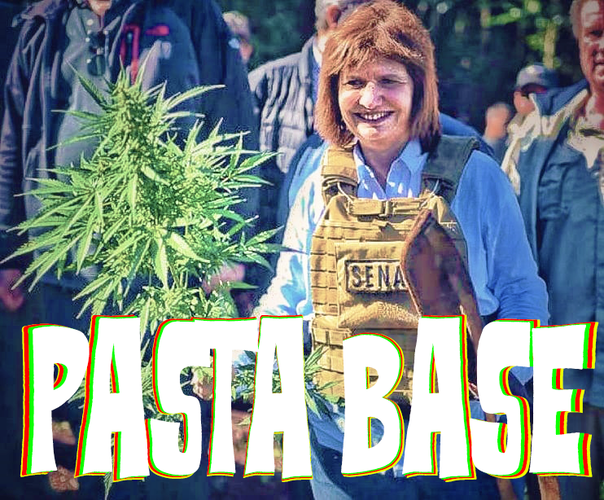

Pasta Base
Pasta Base es el hijo bastardo de un trío entre “La Venganza Será Terrible”, “Last Week Tonight” (el de John Oliver) y “Cucuruchos En La Frente”, uniendo humor ácido, negro y sarcástico con actualidad y cultura. En el transcurrir del programa se terminan mezclando temas como la mitología nórdica con anécdotas de preceptoría, en un constante ida y vuelta entre intelectualidad, lo burdo, la sinceridad y el divague. Es la constante combinación de todo aquello que aprendimos en la vida, que a duras penas alcanza para llenar un programa diario de radio.